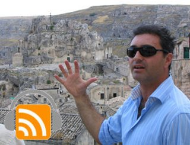

In this show, Enzo Montemurro of Culture Lucane talks about Matera and the region of Basilicata in southern Italy. Enzo was our private guide during a tour of I Sassi, the old part of the city where the houses were dug into the rock many centuries ago.